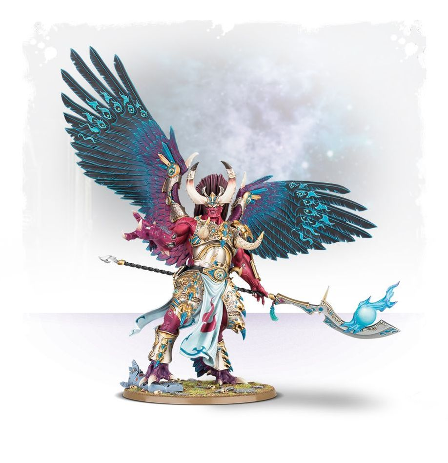
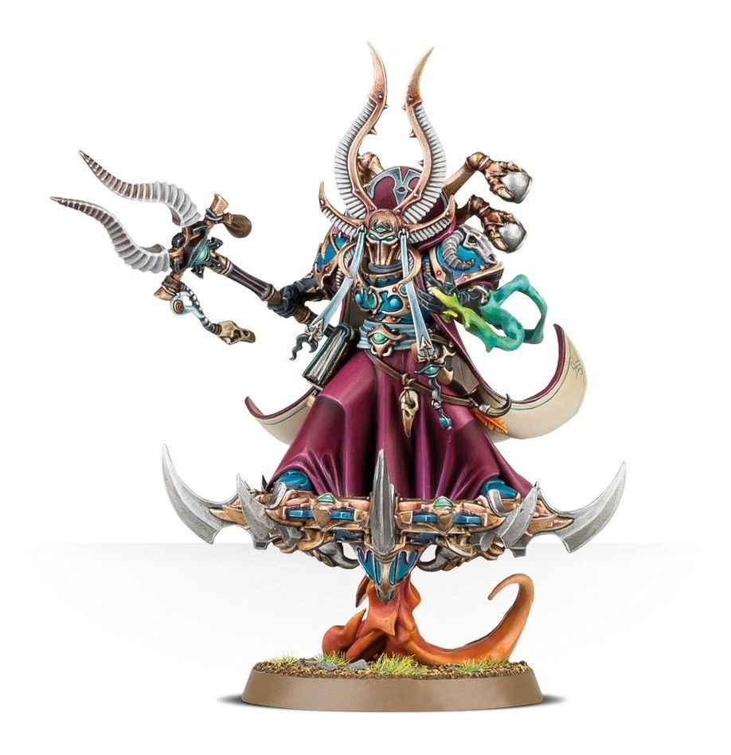
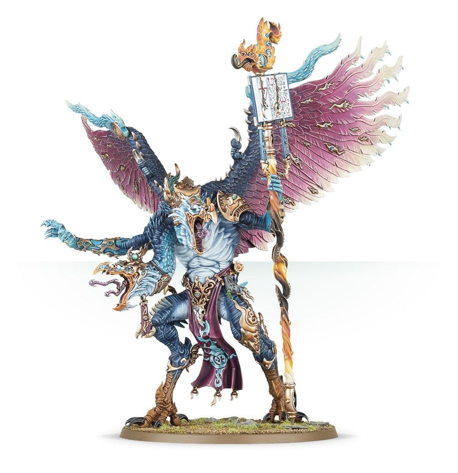

Thousand Sons
Traitor Legion
Accept that Tzeentch has a place for all of us in his grand scheme, and be happy in the part you have to play.

103
Magnus the Red Primarch of the Thousand Sons
Magnus the Red, also known during the early years of the
Imperium as the "Crimson King" and the "Red Cyclops," is the
primarch of the Thousand Sons

28
The Chaos Sorcerer Ahriman
Ahzek Ahriman was once the Chief Librarian and first captain of
the ancient Thousand Sons Legion.

100
Kairos Fateweaver, the Oracle of Tzeentch
Kairos Fateweaver, also known simply as Fateweaver and the
"Oracle of Tzeentch," is a two-headed Lord of Change, a Greater
Daemon of Tzeentch.